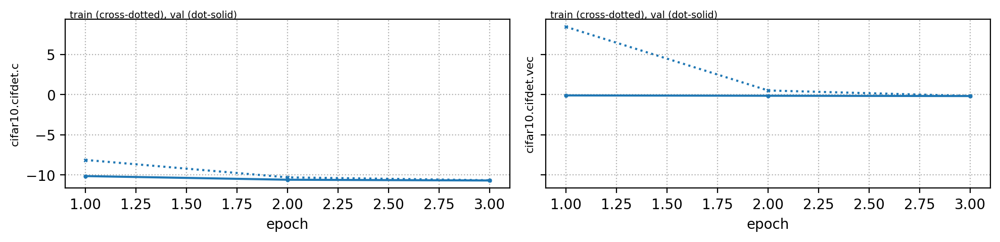
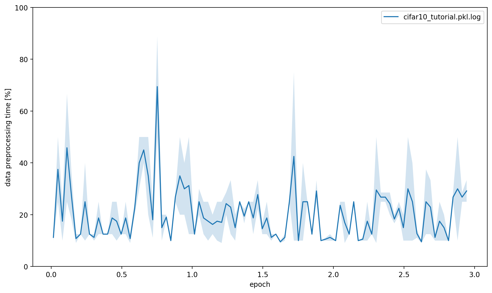
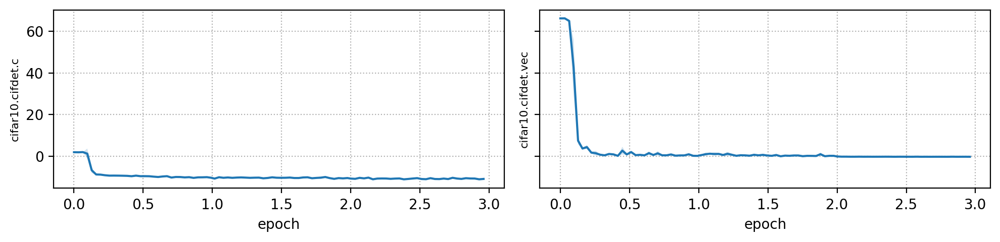
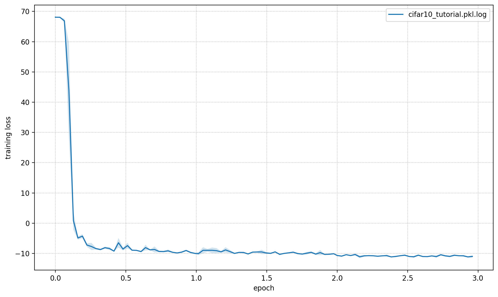
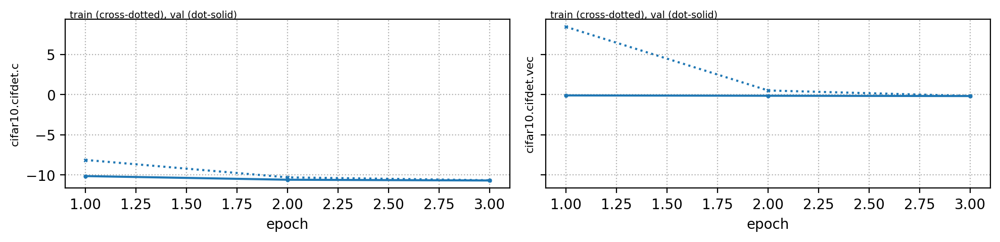
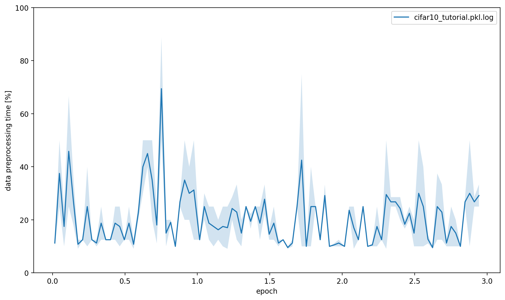
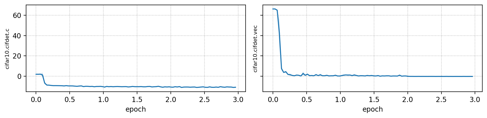
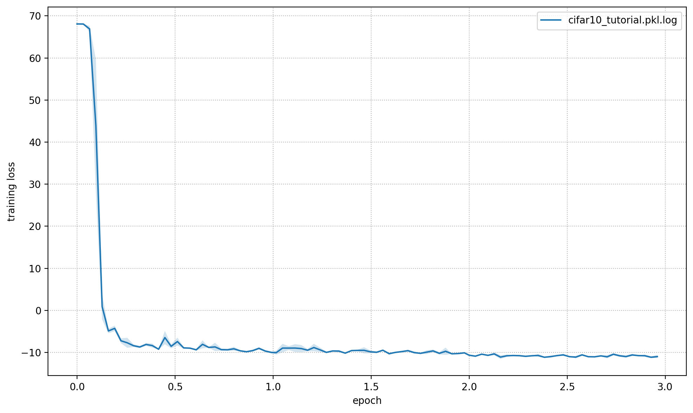

Cifar10#
This page gives a quick introduction to OpenPifPaf’s Cifar10 plugin that is part of openpifpaf.plugins.
It demonstrates the plugin architecture.
There already is a nice dataset for CIFAR10 in torchvision and a related PyTorch tutorial.
The plugin adds a DataModule that uses this dataset.
Let’s start with them setup for this notebook and registering all available OpenPifPaf plugins:
print(openpifpaf.plugin.REGISTERED.keys())
dict_keys(['openpifpaf.plugins.animalpose', 'openpifpaf.plugins.apollocar3d', 'openpifpaf.plugins.cifar10', 'openpifpaf.plugins.coco', 'openpifpaf.plugins.crowdpose', 'openpifpaf.plugins.nuscenes', 'openpifpaf.plugins.posetrack', 'openpifpaf.plugins.wholebody', 'openpifpaf_extras'])
Next, we configure and instantiate the Cifar10 datamodule and look at the configured head metas:
# configure
openpifpaf.plugins.cifar10.datamodule.Cifar10.debug = True
openpifpaf.plugins.cifar10.datamodule.Cifar10.batch_size = 1
# instantiate and inspect
datamodule = openpifpaf.plugins.cifar10.datamodule.Cifar10()
datamodule.set_loader_workers(0) # no multi-processing to see debug outputs in main thread
datamodule.head_metas
[CifDet(name='cifdet', dataset='cifar10', head_index=None, base_stride=None, upsample_stride=1, categories=('plane', 'car', 'bird', 'cat', 'deer', 'dog', 'frog', 'horse', 'ship', 'truck'), training_weights=None)]
We see here that CIFAR10 is being treated as a detection dataset (CifDet) and has 10 categories.
To create a network, we use the factory() function that takes the name of the base network cifar10net and the list of head metas.
net = openpifpaf.network.Factory(base_name='cifar10net').factory(head_metas=datamodule.head_metas)
We can inspect the training data that is returned from datamodule.train_loader():
# configure visualization
openpifpaf.visualizer.Base.set_all_indices(['cifdet:9:regression']) # category 9 = truck
# Create a wrapper for a data loader that iterates over a set of matplotlib axes.
# The only purpose is to set a different matplotlib axis before each call to
# retrieve the next image from the data_loader so that it produces multiple
# debug images in one canvas side-by-side.
def loop_over_axes(axes, data_loader):
previous_common_ax = openpifpaf.visualizer.Base.common_ax
train_loader_iter = iter(data_loader)
for ax in axes.reshape(-1):
openpifpaf.visualizer.Base.common_ax = ax
yield next(train_loader_iter, None)
openpifpaf.visualizer.Base.common_ax = previous_common_ax
# create a canvas and loop over the first few entries in the training data
with openpifpaf.show.canvas(ncols=6, nrows=3, figsize=(10, 5)) as axs:
for images, targets, meta in loop_over_axes(axs, datamodule.train_loader()):
pass

Training#
We train a very small network, cifar10net, for only one epoch. Afterwards, we will investigate its predictions.
%%bash
python -m openpifpaf.train \
--dataset=cifar10 --basenet=cifar10net --log-interval=50 \
--epochs=3 --lr=0.0003 --momentum=0.95 --batch-size=16 \
--lr-warm-up-epochs=0.1 --lr-decay 2.0 2.5 --lr-decay-epochs=0.1 \
--loader-workers=2 --output=cifar10_tutorial.pkl
INFO:__main__:neural network device: cpu (CUDA available: False, count: 0)
INFO:openpifpaf.network.basenetworks:cifar10net: stride = 16, output features = 128
INFO:openpifpaf.network.losses.multi_head:multihead loss: ['cifar10.cifdet.c', 'cifar10.cifdet.vec'], [1.0, 1.0]
INFO:openpifpaf.logger:{'type': 'process', 'argv': ['/opt/hostedtoolcache/Python/3.8.18/x64/lib/python3.8/site-packages/openpifpaf/train.py', '--dataset=cifar10', '--basenet=cifar10net', '--log-interval=50', '--epochs=3', '--lr=0.0003', '--momentum=0.95', '--batch-size=16', '--lr-warm-up-epochs=0.1', '--lr-decay', '2.0', '2.5', '--lr-decay-epochs=0.1', '--loader-workers=2', '--output=cifar10_tutorial.pkl'], 'args': {'output': 'cifar10_tutorial.pkl', 'disable_cuda': False, 'ddp': False, 'local_rank': None, 'sync_batchnorm': True, 'quiet': False, 'debug': False, 'log_stats': False, 'shufflenetv2k_input_conv2_stride': 0, 'shufflenetv2k_input_conv2_outchannels': None, 'shufflenetv2k_stage4_dilation': 1, 'shufflenetv2k_kernel': 5, 'shufflenetv2k_conv5_as_stage': False, 'shufflenetv2k_instance_norm': False, 'shufflenetv2k_group_norm': False, 'shufflenetv2k_leaky_relu': False, 'mobilenetv2_pretrained': True, 'mobilenetv3_pretrained': True, 'swin_drop_path_rate': 0.2, 'swin_input_upsample': False, 'swin_use_fpn': False, 'swin_fpn_out_channels': None, 'swin_fpn_level': 3, 'swin_pretrained': True, 'shufflenetv2_pretrained': True, 'resnet_pretrained': True, 'resnet_pool0_stride': 0, 'resnet_input_conv_stride': 2, 'resnet_input_conv2_stride': 0, 'resnet_block5_dilation': 1, 'resnet_remove_last_block': False, 'xcit_out_channels': None, 'xcit_out_maxpool': False, 'xcit_pretrained': True, 'cf4_dropout': 0.0, 'cf4_inplace_ops': True, 'checkpoint': None, 'basenet': 'cifar10net', 'cross_talk': 0.0, 'download_progress': True, 'head_consolidation': 'filter_and_extend', 'lambdas': None, 'component_lambdas': None, 'auto_tune_mtl': False, 'auto_tune_mtl_variance': False, 'task_sparsity_weight': 0.0, 'b_scale': 1.0, 'scale_log': False, 'scale_soft_clamp': 5.0, 'focal_alpha': 0.5, 'focal_gamma': 1.0, 'bce_soft_clamp': 5.0, 'bce_background_clamp': -15.0, 'regression_soft_clamp': 5.0, 'epochs': 3, 'train_batches': None, 'val_batches': None, 'clip_grad_norm': 0.0, 'clip_grad_value': 0.0, 'log_interval': 50, 'val_interval': 1, 'stride_apply': 1, 'fix_batch_norm': False, 'ema': 0.01, 'profile': None, 'cif_side_length': 4, 'caf_min_size': 3, 'caf_fixed_size': False, 'caf_aspect_ratio': 0.0, 'encoder_suppress_selfhidden': True, 'encoder_suppress_invisible': False, 'encoder_suppress_collision': False, 'momentum': 0.95, 'beta2': 0.999, 'adam_eps': 1e-06, 'nesterov': True, 'weight_decay': 0.0, 'adam': False, 'amsgrad': False, 'lr': 0.0003, 'lr_decay': [2.0, 2.5], 'lr_decay_factor': 0.1, 'lr_decay_epochs': 0.1, 'lr_warm_up_start_epoch': 0, 'lr_warm_up_epochs': 0.1, 'lr_warm_up_factor': 0.001, 'lr_warm_restarts': [], 'lr_warm_restart_duration': 0.5, 'dataset': 'cifar10', 'loader_workers': 2, 'batch_size': 16, 'dataset_weights': None, 'animal_train_annotations': 'data-animalpose/annotations/animal_keypoints_20_train.json', 'animal_val_annotations': 'data-animalpose/annotations/animal_keypoints_20_val.json', 'animal_train_image_dir': 'data-animalpose/images/train/', 'animal_val_image_dir': 'data-animalpose/images/val/', 'animal_square_edge': 513, 'animal_extended_scale': False, 'animal_orientation_invariant': 0.0, 'animal_blur': 0.0, 'animal_augmentation': True, 'animal_rescale_images': 1.0, 'animal_upsample': 1, 'animal_min_kp_anns': 1, 'animal_bmin': 1, 'animal_eval_test2017': False, 'animal_eval_testdev2017': False, 'animal_eval_annotation_filter': True, 'animal_eval_long_edge': 0, 'animal_eval_extended_scale': False, 'animal_eval_orientation_invariant': 0.0, 'apollo_train_annotations': 'data-apollocar3d/annotations/apollo_keypoints_66_train.json', 'apollo_val_annotations': 'data-apollocar3d/annotations/apollo_keypoints_66_val.json', 'apollo_train_image_dir': 'data-apollocar3d/images/train/', 'apollo_val_image_dir': 'data-apollocar3d/images/val/', 'apollo_square_edge': 513, 'apollo_extended_scale': False, 'apollo_orientation_invariant': 0.0, 'apollo_blur': 0.0, 'apollo_augmentation': True, 'apollo_rescale_images': 1.0, 'apollo_upsample': 1, 'apollo_min_kp_anns': 1, 'apollo_bmin': 1, 'apollo_apply_local_centrality': False, 'apollo_eval_annotation_filter': True, 'apollo_eval_long_edge': 0, 'apollo_eval_extended_scale': False, 'apollo_eval_orientation_invariant': 0.0, 'apollo_use_24_kps': False, 'cifar10_root_dir': 'data-cifar10/', 'cifar10_download': False, 'cocodet_train_annotations': 'data-mscoco/annotations/instances_train2017.json', 'cocodet_val_annotations': 'data-mscoco/annotations/instances_val2017.json', 'cocodet_train_image_dir': 'data-mscoco/images/train2017/', 'cocodet_val_image_dir': 'data-mscoco/images/val2017/', 'cocodet_square_edge': 513, 'cocodet_extended_scale': False, 'cocodet_orientation_invariant': 0.0, 'cocodet_blur': 0.0, 'cocodet_augmentation': True, 'cocodet_rescale_images': 1.0, 'cocodet_upsample': 1, 'cocokp_train_annotations': 'data-mscoco/annotations/person_keypoints_train2017.json', 'cocokp_val_annotations': 'data-mscoco/annotations/person_keypoints_val2017.json', 'cocokp_train_image_dir': 'data-mscoco/images/train2017/', 'cocokp_val_image_dir': 'data-mscoco/images/val2017/', 'cocokp_square_edge': 385, 'cocokp_with_dense': False, 'cocokp_extended_scale': False, 'cocokp_orientation_invariant': 0.0, 'cocokp_blur': 0.0, 'cocokp_augmentation': True, 'cocokp_rescale_images': 1.0, 'cocokp_upsample': 1, 'cocokp_min_kp_anns': 1, 'cocokp_bmin': 0.1, 'cocokp_eval_test2017': False, 'cocokp_eval_testdev2017': False, 'coco_eval_annotation_filter': True, 'coco_eval_long_edge': 641, 'coco_eval_extended_scale': False, 'coco_eval_orientation_invariant': 0.0, 'crowdpose_train_annotations': 'data-crowdpose/json/crowdpose_train.json', 'crowdpose_val_annotations': 'data-crowdpose/json/crowdpose_val.json', 'crowdpose_image_dir': 'data-crowdpose/images/', 'crowdpose_square_edge': 385, 'crowdpose_extended_scale': False, 'crowdpose_orientation_invariant': 0.0, 'crowdpose_augmentation': True, 'crowdpose_rescale_images': 1.0, 'crowdpose_upsample': 1, 'crowdpose_min_kp_anns': 1, 'crowdpose_eval_test': False, 'crowdpose_eval_long_edge': 641, 'crowdpose_eval_extended_scale': False, 'crowdpose_eval_orientation_invariant': 0.0, 'crowdpose_index': None, 'nuscenes_train_annotations': '../../../NuScenes/mscoco_style_annotations/nuimages_v1.0-train.json', 'nuscenes_val_annotations': '../../../NuScenes/mscoco_style_annotations/nuimages_v1.0-val.json', 'nuscenes_train_image_dir': '../../../NuScenes/nuimages-v1.0-all-samples', 'nuscenes_val_image_dir': '../../../NuScenes/nuimages-v1.0-all-samples', 'nuscenes_square_edge': 513, 'nuscenes_extended_scale': False, 'nuscenes_orientation_invariant': 0.0, 'nuscenes_blur': 0.0, 'nuscenes_augmentation': True, 'nuscenes_rescale_images': 1.0, 'nuscenes_upsample': 1, 'posetrack2018_train_annotations': 'data-posetrack2018/annotations/train/*.json', 'posetrack2018_val_annotations': 'data-posetrack2018/annotations/val/*.json', 'posetrack2018_eval_annotations': 'data-posetrack2018/annotations/val/*.json', 'posetrack2018_data_root': 'data-posetrack2018', 'posetrack_square_edge': 385, 'posetrack_with_dense': False, 'posetrack_augmentation': True, 'posetrack_rescale_images': 1.0, 'posetrack_upsample': 1, 'posetrack_min_kp_anns': 1, 'posetrack_bmin': 0.1, 'posetrack_sample_pairing': 0.0, 'posetrack_image_augmentations': 0.0, 'posetrack_max_shift': 30.0, 'posetrack_eval_long_edge': 801, 'posetrack_eval_extended_scale': False, 'posetrack_eval_orientation_invariant': 0.0, 'posetrack_ablation_without_tcaf': False, 'posetrack2017_eval_annotations': 'data-posetrack2017/annotations/val/*.json', 'posetrack2017_data_root': 'data-posetrack2017', 'cocokpst_max_shift': 30.0, 'wholebody_train_annotations': 'data-mscoco/annotations/person_keypoints_train2017_wholebody_pifpaf_style.json', 'wholebody_val_annotations': 'data-mscoco/annotations/coco_wholebody_val_v1.0.json', 'wholebody_train_image_dir': 'data-mscoco/images/train2017/', 'wholebody_val_image_dir': 'data-mscoco/images/val2017', 'wholebody_square_edge': 385, 'wholebody_extended_scale': False, 'wholebody_orientation_invariant': 0.0, 'wholebody_blur': 0.0, 'wholebody_augmentation': True, 'wholebody_rescale_images': 1.0, 'wholebody_upsample': 1, 'wholebody_min_kp_anns': 1, 'wholebody_bmin': 1.0, 'wholebody_apply_local_centrality': False, 'wholebody_eval_test2017': False, 'wholebody_eval_testdev2017': False, 'wholebody_eval_annotation_filter': True, 'wholebody_eval_long_edge': 641, 'wholebody_eval_extended_scale': False, 'wholebody_eval_orientation_invariant': 0.0, 'save_all': None, 'show': False, 'image_width': None, 'image_height': None, 'image_dpi_factor': 2.0, 'image_min_dpi': 50.0, 'show_file_extension': 'jpeg', 'textbox_alpha': 0.5, 'text_color': 'white', 'font_size': 8, 'monocolor_connections': False, 'line_width': None, 'skeleton_solid_threshold': 0.5, 'show_box': False, 'white_overlay': False, 'show_joint_scales': False, 'show_joint_confidences': False, 'show_decoding_order': False, 'show_frontier_order': False, 'show_only_decoded_connections': False, 'video_fps': 10, 'video_dpi': 100, 'debug_indices': [], 'device': device(type='cpu'), 'pin_memory': False}, 'version': '0.13.11+12.g37aacea', 'plugin_versions': {'openpifpaf_extras': '0.0.3'}, 'hostname': 'fv-az1778-452'}
INFO:openpifpaf.optimize:SGD optimizer
INFO:openpifpaf.optimize:training batches per epoch = 3125
INFO:openpifpaf.network.trainer:{'type': 'config', 'field_names': ['cifar10.cifdet.c', 'cifar10.cifdet.vec']}
INFO:openpifpaf.network.trainer:model written: cifar10_tutorial.pkl.epoch000
INFO:openpifpaf.network.trainer:{'type': 'train', 'epoch': 0, 'batch': 0, 'n_batches': 3125, 'time': 0.023, 'data_time': 0.089, 'lr': 3e-07, 'loss': 68.103, 'head_losses': [2.001, 66.102]}
INFO:openpifpaf.network.trainer:{'type': 'train', 'epoch': 0, 'batch': 50, 'n_batches': 3125, 'time': 0.01, 'data_time': 0.001, 'lr': 9.1e-07, 'loss': 68.069, 'head_losses': [2.007, 66.062]}
INFO:openpifpaf.network.trainer:{'type': 'train', 'epoch': 0, 'batch': 100, 'n_batches': 3125, 'time': 0.008, 'data_time': 0.001, 'lr': 2.74e-06, 'loss': 68.131, 'head_losses': [1.95, 66.181]}
INFO:openpifpaf.network.trainer:{'type': 'train', 'epoch': 0, 'batch': 150, 'n_batches': 3125, 'time': 0.008, 'data_time': 0.002, 'lr': 8.26e-06, 'loss': 68.003, 'head_losses': [1.971, 66.031]}
INFO:openpifpaf.network.trainer:{'type': 'train', 'epoch': 0, 'batch': 200, 'n_batches': 3125, 'time': 0.01, 'data_time': 0.005, 'lr': 2.495e-05, 'loss': 67.596, 'head_losses': [1.996, 65.6]}
INFO:openpifpaf.network.trainer:{'type': 'train', 'epoch': 0, 'batch': 250, 'n_batches': 3125, 'time': 0.01, 'data_time': 0.001, 'lr': 7.536e-05, 'loss': 66.194, 'head_losses': [2.115, 64.079]}
INFO:openpifpaf.network.trainer:{'type': 'train', 'epoch': 0, 'batch': 300, 'n_batches': 3125, 'time': 0.008, 'data_time': 0.002, 'lr': 0.00022757, 'loss': 59.679, 'head_losses': [3.746, 55.933]}
INFO:openpifpaf.network.trainer:{'type': 'train', 'epoch': 0, 'batch': 350, 'n_batches': 3125, 'time': 0.008, 'data_time': 0.002, 'lr': 0.0003, 'loss': 28.051, 'head_losses': [-1.148, 29.199]}
INFO:openpifpaf.network.trainer:{'type': 'train', 'epoch': 0, 'batch': 400, 'n_batches': 3125, 'time': 0.006, 'data_time': 0.004, 'lr': 0.0003, 'loss': 3.905, 'head_losses': [-5.302, 9.207]}
INFO:openpifpaf.network.trainer:{'type': 'train', 'epoch': 0, 'batch': 450, 'n_batches': 3125, 'time': 0.011, 'data_time': 0.002, 'lr': 0.0003, 'loss': -2.15, 'head_losses': [-7.984, 5.834]}
INFO:openpifpaf.network.trainer:{'type': 'train', 'epoch': 0, 'batch': 500, 'n_batches': 3125, 'time': 0.011, 'data_time': 0.004, 'lr': 0.0003, 'loss': -4.341, 'head_losses': [-8.56, 4.22]}
INFO:openpifpaf.network.trainer:{'type': 'train', 'epoch': 0, 'batch': 550, 'n_batches': 3125, 'time': 0.008, 'data_time': 0.001, 'lr': 0.0003, 'loss': -5.442, 'head_losses': [-8.748, 3.306]}
INFO:openpifpaf.network.trainer:{'type': 'train', 'epoch': 0, 'batch': 600, 'n_batches': 3125, 'time': 0.011, 'data_time': 0.001, 'lr': 0.0003, 'loss': -4.912, 'head_losses': [-8.399, 3.487]}
INFO:openpifpaf.network.trainer:{'type': 'train', 'epoch': 0, 'batch': 650, 'n_batches': 3125, 'time': 0.008, 'data_time': 0.001, 'lr': 0.0003, 'loss': -3.631, 'head_losses': [-9.067, 5.436]}
INFO:openpifpaf.network.trainer:{'type': 'train', 'epoch': 0, 'batch': 700, 'n_batches': 3125, 'time': 0.008, 'data_time': 0.001, 'lr': 0.0003, 'loss': -7.795, 'head_losses': [-9.145, 1.35]}
INFO:openpifpaf.network.trainer:{'type': 'train', 'epoch': 0, 'batch': 750, 'n_batches': 3125, 'time': 0.01, 'data_time': 0.001, 'lr': 0.0003, 'loss': -6.649, 'head_losses': [-8.913, 2.264]}
INFO:openpifpaf.network.trainer:{'type': 'train', 'epoch': 0, 'batch': 800, 'n_batches': 3125, 'time': 0.01, 'data_time': 0.004, 'lr': 0.0003, 'loss': -8.887, 'head_losses': [-9.268, 0.381]}
INFO:openpifpaf.network.trainer:{'type': 'train', 'epoch': 0, 'batch': 850, 'n_batches': 3125, 'time': 0.008, 'data_time': 0.001, 'lr': 0.0003, 'loss': -6.51, 'head_losses': [-9.159, 2.649]}
INFO:openpifpaf.network.trainer:{'type': 'train', 'epoch': 0, 'batch': 900, 'n_batches': 3125, 'time': 0.008, 'data_time': 0.001, 'lr': 0.0003, 'loss': -8.068, 'head_losses': [-9.084, 1.016]}
INFO:openpifpaf.network.trainer:{'type': 'train', 'epoch': 0, 'batch': 950, 'n_batches': 3125, 'time': 0.01, 'data_time': 0.001, 'lr': 0.0003, 'loss': -8.715, 'head_losses': [-9.305, 0.591]}
INFO:openpifpaf.network.trainer:{'type': 'train', 'epoch': 0, 'batch': 1000, 'n_batches': 3125, 'time': 0.008, 'data_time': 0.001, 'lr': 0.0003, 'loss': -8.954, 'head_losses': [-9.202, 0.248]}
INFO:openpifpaf.network.trainer:{'type': 'train', 'epoch': 0, 'batch': 1050, 'n_batches': 3125, 'time': 0.008, 'data_time': 0.002, 'lr': 0.0003, 'loss': -8.451, 'head_losses': [-9.237, 0.786]}
INFO:openpifpaf.network.trainer:{'type': 'train', 'epoch': 0, 'batch': 1100, 'n_batches': 3125, 'time': 0.008, 'data_time': 0.001, 'lr': 0.0003, 'loss': -7.775, 'head_losses': [-9.289, 1.514]}
INFO:openpifpaf.network.trainer:{'type': 'train', 'epoch': 0, 'batch': 1150, 'n_batches': 3125, 'time': 0.008, 'data_time': 0.001, 'lr': 0.0003, 'loss': -8.419, 'head_losses': [-9.234, 0.814]}
INFO:openpifpaf.network.trainer:{'type': 'train', 'epoch': 0, 'batch': 1200, 'n_batches': 3125, 'time': 0.008, 'data_time': 0.001, 'lr': 0.0003, 'loss': -7.881, 'head_losses': [-9.306, 1.425]}
INFO:openpifpaf.network.trainer:{'type': 'train', 'epoch': 0, 'batch': 1250, 'n_batches': 3125, 'time': 0.008, 'data_time': 0.001, 'lr': 0.0003, 'loss': -8.856, 'head_losses': [-9.331, 0.474]}
INFO:openpifpaf.network.trainer:{'type': 'train', 'epoch': 0, 'batch': 1300, 'n_batches': 3125, 'time': 0.008, 'data_time': 0.001, 'lr': 0.0003, 'loss': -9.296, 'head_losses': [-9.419, 0.123]}
INFO:openpifpaf.network.trainer:{'type': 'train', 'epoch': 0, 'batch': 1350, 'n_batches': 3125, 'time': 0.008, 'data_time': 0.001, 'lr': 0.0003, 'loss': -9.166, 'head_losses': [-9.565, 0.398]}
INFO:openpifpaf.network.trainer:{'type': 'train', 'epoch': 0, 'batch': 1400, 'n_batches': 3125, 'time': 0.008, 'data_time': 0.002, 'lr': 0.0003, 'loss': -4.871, 'head_losses': [-9.468, 4.597]}
INFO:openpifpaf.network.trainer:{'type': 'train', 'epoch': 0, 'batch': 1450, 'n_batches': 3125, 'time': 0.008, 'data_time': 0.002, 'lr': 0.0003, 'loss': -8.045, 'head_losses': [-8.967, 0.922]}
INFO:openpifpaf.network.trainer:{'type': 'train', 'epoch': 0, 'batch': 1500, 'n_batches': 3125, 'time': 0.01, 'data_time': 0.001, 'lr': 0.0003, 'loss': -8.073, 'head_losses': [-9.336, 1.264]}
INFO:openpifpaf.network.trainer:{'type': 'train', 'epoch': 0, 'batch': 1550, 'n_batches': 3125, 'time': 0.008, 'data_time': 0.001, 'lr': 0.0003, 'loss': -9.009, 'head_losses': [-9.625, 0.615]}
INFO:openpifpaf.network.trainer:{'type': 'train', 'epoch': 0, 'batch': 1600, 'n_batches': 3125, 'time': 0.008, 'data_time': 0.001, 'lr': 0.0003, 'loss': -6.466, 'head_losses': [-9.161, 2.695]}
INFO:openpifpaf.network.trainer:{'type': 'train', 'epoch': 0, 'batch': 1650, 'n_batches': 3125, 'time': 0.008, 'data_time': 0.001, 'lr': 0.0003, 'loss': -8.349, 'head_losses': [-9.78, 1.431]}
INFO:openpifpaf.network.trainer:{'type': 'train', 'epoch': 0, 'batch': 1700, 'n_batches': 3125, 'time': 0.008, 'data_time': 0.002, 'lr': 0.0003, 'loss': -9.091, 'head_losses': [-9.639, 0.548]}
INFO:openpifpaf.network.trainer:{'type': 'train', 'epoch': 0, 'batch': 1750, 'n_batches': 3125, 'time': 0.008, 'data_time': 0.001, 'lr': 0.0003, 'loss': -8.739, 'head_losses': [-9.38, 0.641]}
INFO:openpifpaf.network.trainer:{'type': 'train', 'epoch': 0, 'batch': 1800, 'n_batches': 3125, 'time': 0.011, 'data_time': 0.001, 'lr': 0.0003, 'loss': -8.868, 'head_losses': [-9.849, 0.982]}
INFO:openpifpaf.network.trainer:{'type': 'train', 'epoch': 0, 'batch': 1850, 'n_batches': 3125, 'time': 0.008, 'data_time': 0.002, 'lr': 0.0003, 'loss': -9.084, 'head_losses': [-9.57, 0.487]}
INFO:openpifpaf.network.trainer:{'type': 'train', 'epoch': 0, 'batch': 1900, 'n_batches': 3125, 'time': 0.01, 'data_time': 0.002, 'lr': 0.0003, 'loss': -9.574, 'head_losses': [-9.944, 0.37]}
INFO:openpifpaf.network.trainer:{'type': 'train', 'epoch': 0, 'batch': 1950, 'n_batches': 3125, 'time': 0.01, 'data_time': 0.003, 'lr': 0.0003, 'loss': -9.165, 'head_losses': [-9.791, 0.626]}
INFO:openpifpaf.network.trainer:{'type': 'train', 'epoch': 0, 'batch': 2000, 'n_batches': 3125, 'time': 0.01, 'data_time': 0.005, 'lr': 0.0003, 'loss': -8.997, 'head_losses': [-9.657, 0.66]}
INFO:openpifpaf.network.trainer:{'type': 'train', 'epoch': 0, 'batch': 2050, 'n_batches': 3125, 'time': 0.01, 'data_time': 0.004, 'lr': 0.0003, 'loss': -7.135, 'head_losses': [-9.589, 2.454]}
INFO:openpifpaf.network.trainer:{'type': 'train', 'epoch': 0, 'batch': 2100, 'n_batches': 3125, 'time': 0.01, 'data_time': 0.005, 'lr': 0.0003, 'loss': -8.726, 'head_losses': [-9.445, 0.718]}
INFO:openpifpaf.network.trainer:{'type': 'train', 'epoch': 0, 'batch': 2150, 'n_batches': 3125, 'time': 0.01, 'data_time': 0.002, 'lr': 0.0003, 'loss': -8.87, 'head_losses': [-9.504, 0.634]}
INFO:openpifpaf.network.trainer:{'type': 'train', 'epoch': 0, 'batch': 2200, 'n_batches': 3125, 'time': 0.01, 'data_time': 0.005, 'lr': 0.0003, 'loss': -7.692, 'head_losses': [-10.271, 2.579]}
INFO:openpifpaf.network.trainer:{'type': 'train', 'epoch': 0, 'batch': 2250, 'n_batches': 3125, 'time': 0.009, 'data_time': 0.001, 'lr': 0.0003, 'loss': -9.677, 'head_losses': [-9.995, 0.318]}
INFO:openpifpaf.network.trainer:{'type': 'train', 'epoch': 0, 'batch': 2300, 'n_batches': 3125, 'time': 0.008, 'data_time': 0.002, 'lr': 0.0003, 'loss': -9.066, 'head_losses': [-9.762, 0.696]}
INFO:openpifpaf.network.trainer:{'type': 'train', 'epoch': 0, 'batch': 2350, 'n_batches': 3125, 'time': 0.009, 'data_time': 0.008, 'lr': 0.0003, 'loss': -9.594, 'head_losses': [-9.949, 0.355]}
INFO:openpifpaf.network.trainer:{'type': 'train', 'epoch': 0, 'batch': 2400, 'n_batches': 3125, 'time': 0.01, 'data_time': 0.005, 'lr': 0.0003, 'loss': -9.122, 'head_losses': [-9.868, 0.746]}
INFO:openpifpaf.network.trainer:{'type': 'train', 'epoch': 0, 'batch': 2450, 'n_batches': 3125, 'time': 0.01, 'data_time': 0.001, 'lr': 0.0003, 'loss': -9.612, 'head_losses': [-9.9, 0.288]}
INFO:openpifpaf.network.trainer:{'type': 'train', 'epoch': 0, 'batch': 2500, 'n_batches': 3125, 'time': 0.01, 'data_time': 0.002, 'lr': 0.0003, 'loss': -9.589, 'head_losses': [-10.192, 0.604]}
INFO:openpifpaf.network.trainer:{'type': 'train', 'epoch': 0, 'batch': 2550, 'n_batches': 3125, 'time': 0.01, 'data_time': 0.002, 'lr': 0.0003, 'loss': -8.67, 'head_losses': [-9.934, 1.264]}
INFO:openpifpaf.network.trainer:{'type': 'train', 'epoch': 0, 'batch': 2600, 'n_batches': 3125, 'time': 0.011, 'data_time': 0.002, 'lr': 0.0003, 'loss': -9.774, 'head_losses': [-9.885, 0.111]}
INFO:openpifpaf.network.trainer:{'type': 'train', 'epoch': 0, 'batch': 2650, 'n_batches': 3125, 'time': 0.01, 'data_time': 0.001, 'lr': 0.0003, 'loss': -9.44, 'head_losses': [-10.015, 0.575]}
INFO:openpifpaf.network.trainer:{'type': 'train', 'epoch': 0, 'batch': 2700, 'n_batches': 3125, 'time': 0.01, 'data_time': 0.001, 'lr': 0.0003, 'loss': -9.673, 'head_losses': [-10.433, 0.76]}
INFO:openpifpaf.network.trainer:{'type': 'train', 'epoch': 0, 'batch': 2750, 'n_batches': 3125, 'time': 0.008, 'data_time': 0.002, 'lr': 0.0003, 'loss': -9.986, 'head_losses': [-10.151, 0.165]}
INFO:openpifpaf.network.trainer:{'type': 'train', 'epoch': 0, 'batch': 2800, 'n_batches': 3125, 'time': 0.007, 'data_time': 0.002, 'lr': 0.0003, 'loss': -9.323, 'head_losses': [-10.008, 0.685]}
INFO:openpifpaf.network.trainer:{'type': 'train', 'epoch': 0, 'batch': 2850, 'n_batches': 3125, 'time': 0.01, 'data_time': 0.005, 'lr': 0.0003, 'loss': -9.804, 'head_losses': [-10.073, 0.269]}
INFO:openpifpaf.network.trainer:{'type': 'train', 'epoch': 0, 'batch': 2900, 'n_batches': 3125, 'time': 0.01, 'data_time': 0.002, 'lr': 0.0003, 'loss': -8.751, 'head_losses': [-9.978, 1.227]}
INFO:openpifpaf.network.trainer:{'type': 'train', 'epoch': 0, 'batch': 2950, 'n_batches': 3125, 'time': 0.01, 'data_time': 0.002, 'lr': 0.0003, 'loss': -9.285, 'head_losses': [-10.061, 0.776]}
INFO:openpifpaf.network.trainer:{'type': 'train', 'epoch': 0, 'batch': 3000, 'n_batches': 3125, 'time': 0.01, 'data_time': 0.004, 'lr': 0.0003, 'loss': -9.432, 'head_losses': [-9.829, 0.397]}
INFO:openpifpaf.network.trainer:{'type': 'train', 'epoch': 0, 'batch': 3050, 'n_batches': 3125, 'time': 0.01, 'data_time': 0.005, 'lr': 0.0003, 'loss': -9.897, 'head_losses': [-10.066, 0.168]}
INFO:openpifpaf.network.trainer:{'type': 'train', 'epoch': 0, 'batch': 3100, 'n_batches': 3125, 'time': 0.008, 'data_time': 0.001, 'lr': 0.0003, 'loss': -10.198, 'head_losses': [-10.492, 0.294]}
INFO:openpifpaf.network.trainer:applying ema
INFO:openpifpaf.network.trainer:{'type': 'train-epoch', 'epoch': 1, 'loss': 0.31248, 'head_losses': [-8.12319, 8.43567], 'time': 33.3, 'n_clipped_grad': 0, 'max_norm': 0.0}
INFO:openpifpaf.network.trainer:model written: cifar10_tutorial.pkl.epoch001
INFO:openpifpaf.network.trainer:{'type': 'val-epoch', 'epoch': 1, 'loss': -10.23007, 'head_losses': [-10.13265, -0.09741], 'time': 5.2}
INFO:openpifpaf.network.trainer:restoring params from before ema
INFO:openpifpaf.network.trainer:{'type': 'train', 'epoch': 1, 'batch': 0, 'n_batches': 3125, 'time': 0.018, 'data_time': 0.046, 'lr': 0.0003, 'loss': -9.793, 'head_losses': [-9.991, 0.199]}
INFO:openpifpaf.network.trainer:{'type': 'train', 'epoch': 1, 'batch': 50, 'n_batches': 3125, 'time': 0.008, 'data_time': 0.001, 'lr': 0.0003, 'loss': -9.599, 'head_losses': [-10.209, 0.61]}
INFO:openpifpaf.network.trainer:{'type': 'train', 'epoch': 1, 'batch': 100, 'n_batches': 3125, 'time': 0.008, 'data_time': 0.001, 'lr': 0.0003, 'loss': -10.498, 'head_losses': [-11.061, 0.563]}
INFO:openpifpaf.network.trainer:{'type': 'train', 'epoch': 1, 'batch': 150, 'n_batches': 3125, 'time': 0.01, 'data_time': 0.003, 'lr': 0.0003, 'loss': -7.948, 'head_losses': [-9.779, 1.831]}
INFO:openpifpaf.network.trainer:{'type': 'train', 'epoch': 1, 'batch': 200, 'n_batches': 3125, 'time': 0.01, 'data_time': 0.002, 'lr': 0.0003, 'loss': -9.975, 'head_losses': [-10.19, 0.216]}
INFO:openpifpaf.network.trainer:{'type': 'train', 'epoch': 1, 'batch': 250, 'n_batches': 3125, 'time': 0.008, 'data_time': 0.002, 'lr': 0.0003, 'loss': -8.503, 'head_losses': [-10.104, 1.601]}
INFO:openpifpaf.network.trainer:{'type': 'train', 'epoch': 1, 'batch': 300, 'n_batches': 3125, 'time': 0.008, 'data_time': 0.001, 'lr': 0.0003, 'loss': -9.429, 'head_losses': [-10.392, 0.962]}
INFO:openpifpaf.network.trainer:{'type': 'train', 'epoch': 1, 'batch': 350, 'n_batches': 3125, 'time': 0.01, 'data_time': 0.001, 'lr': 0.0003, 'loss': -8.032, 'head_losses': [-9.926, 1.894]}
INFO:openpifpaf.network.trainer:{'type': 'train', 'epoch': 1, 'batch': 400, 'n_batches': 3125, 'time': 0.008, 'data_time': 0.002, 'lr': 0.0003, 'loss': -9.881, 'head_losses': [-10.263, 0.382]}
INFO:openpifpaf.network.trainer:{'type': 'train', 'epoch': 1, 'batch': 450, 'n_batches': 3125, 'time': 0.01, 'data_time': 0.002, 'lr': 0.0003, 'loss': -8.235, 'head_losses': [-9.917, 1.682]}
INFO:openpifpaf.network.trainer:{'type': 'train', 'epoch': 1, 'batch': 500, 'n_batches': 3125, 'time': 0.008, 'data_time': 0.001, 'lr': 0.0003, 'loss': -9.916, 'head_losses': [-10.615, 0.699]}
INFO:openpifpaf.network.trainer:{'type': 'train', 'epoch': 1, 'batch': 550, 'n_batches': 3125, 'time': 0.01, 'data_time': 0.001, 'lr': 0.0003, 'loss': -9.746, 'head_losses': [-9.981, 0.234]}
INFO:openpifpaf.network.trainer:{'type': 'train', 'epoch': 1, 'batch': 600, 'n_batches': 3125, 'time': 0.008, 'data_time': 0.002, 'lr': 0.0003, 'loss': -9.187, 'head_losses': [-10.296, 1.108]}
INFO:openpifpaf.network.trainer:{'type': 'train', 'epoch': 1, 'batch': 650, 'n_batches': 3125, 'time': 0.008, 'data_time': 0.002, 'lr': 0.0003, 'loss': -9.715, 'head_losses': [-9.999, 0.284]}
INFO:openpifpaf.network.trainer:{'type': 'train', 'epoch': 1, 'batch': 700, 'n_batches': 3125, 'time': 0.011, 'data_time': 0.001, 'lr': 0.0003, 'loss': -7.942, 'head_losses': [-10.145, 2.203]}
INFO:openpifpaf.network.trainer:{'type': 'train', 'epoch': 1, 'batch': 750, 'n_batches': 3125, 'time': 0.007, 'data_time': 0.002, 'lr': 0.0003, 'loss': -8.854, 'head_losses': [-10.12, 1.266]}
INFO:openpifpaf.network.trainer:{'type': 'train', 'epoch': 1, 'batch': 800, 'n_batches': 3125, 'time': 0.01, 'data_time': 0.002, 'lr': 0.0003, 'loss': -9.917, 'head_losses': [-10.207, 0.29]}
INFO:openpifpaf.network.trainer:{'type': 'train', 'epoch': 1, 'batch': 850, 'n_batches': 3125, 'time': 0.008, 'data_time': 0.001, 'lr': 0.0003, 'loss': -10.131, 'head_losses': [-10.283, 0.152]}
INFO:openpifpaf.network.trainer:{'type': 'train', 'epoch': 1, 'batch': 900, 'n_batches': 3125, 'time': 0.006, 'data_time': 0.002, 'lr': 0.0003, 'loss': -9.824, 'head_losses': [-10.249, 0.425]}
INFO:openpifpaf.network.trainer:{'type': 'train', 'epoch': 1, 'batch': 950, 'n_batches': 3125, 'time': 0.01, 'data_time': 0.002, 'lr': 0.0003, 'loss': -9.809, 'head_losses': [-10.183, 0.373]}
INFO:openpifpaf.network.trainer:{'type': 'train', 'epoch': 1, 'batch': 1000, 'n_batches': 3125, 'time': 0.01, 'data_time': 0.001, 'lr': 0.0003, 'loss': -9.477, 'head_losses': [-10.215, 0.738]}
INFO:openpifpaf.network.trainer:{'type': 'train', 'epoch': 1, 'batch': 1050, 'n_batches': 3125, 'time': 0.008, 'data_time': 0.002, 'lr': 0.0003, 'loss': -9.949, 'head_losses': [-10.157, 0.208]}
INFO:openpifpaf.network.trainer:{'type': 'train', 'epoch': 1, 'batch': 1100, 'n_batches': 3125, 'time': 0.008, 'data_time': 0.002, 'lr': 0.0003, 'loss': -9.405, 'head_losses': [-10.172, 0.767]}
INFO:openpifpaf.network.trainer:{'type': 'train', 'epoch': 1, 'batch': 1150, 'n_batches': 3125, 'time': 0.009, 'data_time': 0.002, 'lr': 0.0003, 'loss': -10.206, 'head_losses': [-10.385, 0.18]}
INFO:openpifpaf.network.trainer:{'type': 'train', 'epoch': 1, 'batch': 1200, 'n_batches': 3125, 'time': 0.006, 'data_time': 0.001, 'lr': 0.0003, 'loss': -10.121, 'head_losses': [-10.596, 0.475]}
INFO:openpifpaf.network.trainer:{'type': 'train', 'epoch': 1, 'batch': 1250, 'n_batches': 3125, 'time': 0.008, 'data_time': 0.002, 'lr': 0.0003, 'loss': -9.686, 'head_losses': [-10.3, 0.613]}
INFO:openpifpaf.network.trainer:{'type': 'train', 'epoch': 1, 'batch': 1300, 'n_batches': 3125, 'time': 0.008, 'data_time': 0.002, 'lr': 0.0003, 'loss': -9.431, 'head_losses': [-10.352, 0.921]}
INFO:openpifpaf.network.trainer:{'type': 'train', 'epoch': 1, 'batch': 1350, 'n_batches': 3125, 'time': 0.008, 'data_time': 0.001, 'lr': 0.0003, 'loss': -9.308, 'head_losses': [-9.786, 0.478]}
INFO:openpifpaf.network.trainer:{'type': 'train', 'epoch': 1, 'batch': 1400, 'n_batches': 3125, 'time': 0.008, 'data_time': 0.002, 'lr': 0.0003, 'loss': -9.721, 'head_losses': [-10.254, 0.533]}
INFO:openpifpaf.network.trainer:{'type': 'train', 'epoch': 1, 'batch': 1450, 'n_batches': 3125, 'time': 0.006, 'data_time': 0.002, 'lr': 0.0003, 'loss': -10.214, 'head_losses': [-10.378, 0.164]}
INFO:openpifpaf.network.trainer:{'type': 'train', 'epoch': 1, 'batch': 1500, 'n_batches': 3125, 'time': 0.009, 'data_time': 0.002, 'lr': 0.0003, 'loss': -8.765, 'head_losses': [-10.053, 1.288]}
INFO:openpifpaf.network.trainer:{'type': 'train', 'epoch': 1, 'batch': 1550, 'n_batches': 3125, 'time': 0.008, 'data_time': 0.001, 'lr': 0.0003, 'loss': -10.188, 'head_losses': [-10.457, 0.269]}
INFO:openpifpaf.network.trainer:{'type': 'train', 'epoch': 1, 'batch': 1600, 'n_batches': 3125, 'time': 0.006, 'data_time': 0.001, 'lr': 0.0003, 'loss': -9.493, 'head_losses': [-10.06, 0.567]}
INFO:openpifpaf.network.trainer:{'type': 'train', 'epoch': 1, 'batch': 1650, 'n_batches': 3125, 'time': 0.008, 'data_time': 0.001, 'lr': 0.0003, 'loss': -9.774, 'head_losses': [-9.988, 0.213]}
INFO:openpifpaf.network.trainer:{'type': 'train', 'epoch': 1, 'batch': 1700, 'n_batches': 3125, 'time': 0.008, 'data_time': 0.002, 'lr': 0.0003, 'loss': -10.139, 'head_losses': [-10.479, 0.34]}
INFO:openpifpaf.network.trainer:{'type': 'train', 'epoch': 1, 'batch': 1750, 'n_batches': 3125, 'time': 0.01, 'data_time': 0.001, 'lr': 0.0003, 'loss': -9.388, 'head_losses': [-10.494, 1.106]}
INFO:openpifpaf.network.trainer:{'type': 'train', 'epoch': 1, 'batch': 1800, 'n_batches': 3125, 'time': 0.008, 'data_time': 0.001, 'lr': 0.0003, 'loss': -9.559, 'head_losses': [-9.782, 0.223]}
INFO:openpifpaf.network.trainer:{'type': 'train', 'epoch': 1, 'batch': 1850, 'n_batches': 3125, 'time': 0.008, 'data_time': 0.001, 'lr': 0.0003, 'loss': -10.022, 'head_losses': [-10.002, -0.021]}
INFO:openpifpaf.network.trainer:{'type': 'train', 'epoch': 1, 'batch': 1900, 'n_batches': 3125, 'time': 0.008, 'data_time': 0.001, 'lr': 0.0003, 'loss': -10.567, 'head_losses': [-10.702, 0.136]}
INFO:openpifpaf.network.trainer:{'type': 'train', 'epoch': 1, 'batch': 1950, 'n_batches': 3125, 'time': 0.011, 'data_time': 0.001, 'lr': 0.0003, 'loss': -10.005, 'head_losses': [-10.195, 0.19]}
INFO:openpifpaf.network.trainer:{'type': 'train', 'epoch': 1, 'batch': 2000, 'n_batches': 3125, 'time': 0.01, 'data_time': 0.001, 'lr': 0.0003, 'loss': -9.964, 'head_losses': [-10.51, 0.546]}
INFO:openpifpaf.network.trainer:{'type': 'train', 'epoch': 1, 'batch': 2050, 'n_batches': 3125, 'time': 0.01, 'data_time': 0.001, 'lr': 0.0003, 'loss': -9.947, 'head_losses': [-10.059, 0.112]}
INFO:openpifpaf.network.trainer:{'type': 'train', 'epoch': 1, 'batch': 2100, 'n_batches': 3125, 'time': 0.008, 'data_time': 0.001, 'lr': 0.0003, 'loss': -9.639, 'head_losses': [-10.101, 0.462]}
INFO:openpifpaf.network.trainer:{'type': 'train', 'epoch': 1, 'batch': 2150, 'n_batches': 3125, 'time': 0.008, 'data_time': 0.002, 'lr': 0.0003, 'loss': -9.335, 'head_losses': [-10.032, 0.697]}
INFO:openpifpaf.network.trainer:{'type': 'train', 'epoch': 1, 'batch': 2200, 'n_batches': 3125, 'time': 0.008, 'data_time': 0.002, 'lr': 0.0003, 'loss': -9.817, 'head_losses': [-9.995, 0.177]}
INFO:openpifpaf.network.trainer:{'type': 'train', 'epoch': 1, 'batch': 2250, 'n_batches': 3125, 'time': 0.008, 'data_time': 0.006, 'lr': 0.0003, 'loss': -9.783, 'head_losses': [-10.132, 0.349]}
INFO:openpifpaf.network.trainer:{'type': 'train', 'epoch': 1, 'batch': 2300, 'n_batches': 3125, 'time': 0.01, 'data_time': 0.001, 'lr': 0.0003, 'loss': -10.282, 'head_losses': [-10.805, 0.523]}
INFO:openpifpaf.network.trainer:{'type': 'train', 'epoch': 1, 'batch': 2350, 'n_batches': 3125, 'time': 0.01, 'data_time': 0.001, 'lr': 0.0003, 'loss': -10.35, 'head_losses': [-10.462, 0.112]}
INFO:openpifpaf.network.trainer:{'type': 'train', 'epoch': 1, 'batch': 2400, 'n_batches': 3125, 'time': 0.01, 'data_time': 0.001, 'lr': 0.0003, 'loss': -10.065, 'head_losses': [-10.147, 0.082]}
INFO:openpifpaf.network.trainer:{'type': 'train', 'epoch': 1, 'batch': 2450, 'n_batches': 3125, 'time': 0.01, 'data_time': 0.004, 'lr': 0.0003, 'loss': -9.469, 'head_losses': [-9.588, 0.119]}
INFO:openpifpaf.network.trainer:{'type': 'train', 'epoch': 1, 'batch': 2500, 'n_batches': 3125, 'time': 0.01, 'data_time': 0.001, 'lr': 0.0003, 'loss': -10.363, 'head_losses': [-10.788, 0.425]}
INFO:openpifpaf.network.trainer:{'type': 'train', 'epoch': 1, 'batch': 2550, 'n_batches': 3125, 'time': 0.008, 'data_time': 0.002, 'lr': 0.0003, 'loss': -9.31, 'head_losses': [-9.561, 0.251]}
INFO:openpifpaf.network.trainer:{'type': 'train', 'epoch': 1, 'batch': 2600, 'n_batches': 3125, 'time': 0.008, 'data_time': 0.002, 'lr': 0.0003, 'loss': -9.944, 'head_losses': [-10.19, 0.246]}
INFO:openpifpaf.network.trainer:{'type': 'train', 'epoch': 1, 'batch': 2650, 'n_batches': 3125, 'time': 0.008, 'data_time': 0.001, 'lr': 0.0003, 'loss': -10.476, 'head_losses': [-10.642, 0.166]}
INFO:openpifpaf.network.trainer:{'type': 'train', 'epoch': 1, 'batch': 2700, 'n_batches': 3125, 'time': 0.008, 'data_time': 0.001, 'lr': 0.0003, 'loss': -9.935, 'head_losses': [-10.157, 0.223]}
INFO:openpifpaf.network.trainer:{'type': 'train', 'epoch': 1, 'batch': 2750, 'n_batches': 3125, 'time': 0.008, 'data_time': 0.002, 'lr': 0.0003, 'loss': -8.86, 'head_losses': [-10.732, 1.871]}
INFO:openpifpaf.network.trainer:{'type': 'train', 'epoch': 1, 'batch': 2800, 'n_batches': 3125, 'time': 0.006, 'data_time': 0.002, 'lr': 0.0003, 'loss': -10.573, 'head_losses': [-10.797, 0.224]}
INFO:openpifpaf.network.trainer:{'type': 'train', 'epoch': 1, 'batch': 2850, 'n_batches': 3125, 'time': 0.01, 'data_time': 0.001, 'lr': 0.0003, 'loss': -10.344, 'head_losses': [-10.47, 0.126]}
INFO:openpifpaf.network.trainer:{'type': 'train', 'epoch': 1, 'batch': 2900, 'n_batches': 3125, 'time': 0.01, 'data_time': 0.001, 'lr': 0.0003, 'loss': -10.285, 'head_losses': [-10.318, 0.033]}
INFO:openpifpaf.network.trainer:{'type': 'train', 'epoch': 1, 'batch': 2950, 'n_batches': 3125, 'time': 0.009, 'data_time': 0.001, 'lr': 0.0003, 'loss': -10.293, 'head_losses': [-10.811, 0.518]}
INFO:openpifpaf.network.trainer:{'type': 'train', 'epoch': 1, 'batch': 3000, 'n_batches': 3125, 'time': 0.01, 'data_time': 0.001, 'lr': 0.0003, 'loss': -10.221, 'head_losses': [-10.256, 0.035]}
INFO:openpifpaf.network.trainer:{'type': 'train', 'epoch': 1, 'batch': 3050, 'n_batches': 3125, 'time': 0.01, 'data_time': 0.001, 'lr': 0.0003, 'loss': -10.108, 'head_losses': [-10.291, 0.183]}
INFO:openpifpaf.network.trainer:{'type': 'train', 'epoch': 1, 'batch': 3100, 'n_batches': 3125, 'time': 0.008, 'data_time': 0.001, 'lr': 0.0003, 'loss': -10.084, 'head_losses': [-10.439, 0.354]}
INFO:openpifpaf.network.trainer:applying ema
INFO:openpifpaf.network.trainer:{'type': 'train-epoch', 'epoch': 2, 'loss': -9.77658, 'head_losses': [-10.29235, 0.51577], 'time': 33.2, 'n_clipped_grad': 0, 'max_norm': 0.0}
INFO:openpifpaf.network.trainer:model written: cifar10_tutorial.pkl.epoch002
INFO:openpifpaf.network.trainer:{'type': 'val-epoch', 'epoch': 2, 'loss': -10.7251, 'head_losses': [-10.5853, -0.1398], 'time': 5.1}
INFO:openpifpaf.network.trainer:restoring params from before ema
INFO:openpifpaf.network.trainer:{'type': 'train', 'epoch': 2, 'batch': 0, 'n_batches': 3125, 'time': 0.014, 'data_time': 0.049, 'lr': 0.0003, 'loss': -10.636, 'head_losses': [-10.67, 0.034]}
INFO:openpifpaf.network.trainer:{'type': 'train', 'epoch': 2, 'batch': 50, 'n_batches': 3125, 'time': 0.01, 'data_time': 0.001, 'lr': 0.00020755, 'loss': -10.681, 'head_losses': [-10.581, -0.1]}
INFO:openpifpaf.network.trainer:{'type': 'train', 'epoch': 2, 'batch': 100, 'n_batches': 3125, 'time': 0.01, 'data_time': 0.001, 'lr': 0.00014359, 'loss': -10.711, 'head_losses': [-10.602, -0.109]}
INFO:openpifpaf.network.trainer:{'type': 'train', 'epoch': 2, 'batch': 150, 'n_batches': 3125, 'time': 0.009, 'data_time': 0.002, 'lr': 9.934e-05, 'loss': -11.049, 'head_losses': [-10.891, -0.158]}
INFO:openpifpaf.network.trainer:{'type': 'train', 'epoch': 2, 'batch': 200, 'n_batches': 3125, 'time': 0.008, 'data_time': 0.002, 'lr': 6.873e-05, 'loss': -10.447, 'head_losses': [-10.329, -0.118]}
INFO:openpifpaf.network.trainer:{'type': 'train', 'epoch': 2, 'batch': 250, 'n_batches': 3125, 'time': 0.008, 'data_time': 0.002, 'lr': 4.755e-05, 'loss': -10.369, 'head_losses': [-10.227, -0.142]}
INFO:openpifpaf.network.trainer:{'type': 'train', 'epoch': 2, 'batch': 300, 'n_batches': 3125, 'time': 0.011, 'data_time': 0.001, 'lr': 3.289e-05, 'loss': -10.751, 'head_losses': [-10.593, -0.157]}
INFO:openpifpaf.network.trainer:{'type': 'train', 'epoch': 2, 'batch': 350, 'n_batches': 3125, 'time': 0.008, 'data_time': 0.001, 'lr': 3e-05, 'loss': -10.622, 'head_losses': [-10.452, -0.17]}
INFO:openpifpaf.network.trainer:{'type': 'train', 'epoch': 2, 'batch': 400, 'n_batches': 3125, 'time': 0.008, 'data_time': 0.001, 'lr': 3e-05, 'loss': -9.998, 'head_losses': [-9.84, -0.158]}
INFO:openpifpaf.network.trainer:{'type': 'train', 'epoch': 2, 'batch': 450, 'n_batches': 3125, 'time': 0.008, 'data_time': 0.002, 'lr': 3e-05, 'loss': -10.677, 'head_losses': [-10.507, -0.17]}
INFO:openpifpaf.network.trainer:{'type': 'train', 'epoch': 2, 'batch': 500, 'n_batches': 3125, 'time': 0.008, 'data_time': 0.002, 'lr': 3e-05, 'loss': -11.542, 'head_losses': [-11.394, -0.148]}
INFO:openpifpaf.network.trainer:{'type': 'train', 'epoch': 2, 'batch': 550, 'n_batches': 3125, 'time': 0.01, 'data_time': 0.001, 'lr': 3e-05, 'loss': -10.662, 'head_losses': [-10.537, -0.125]}
INFO:openpifpaf.network.trainer:{'type': 'train', 'epoch': 2, 'batch': 600, 'n_batches': 3125, 'time': 0.01, 'data_time': 0.001, 'lr': 3e-05, 'loss': -11.077, 'head_losses': [-10.919, -0.158]}
INFO:openpifpaf.network.trainer:{'type': 'train', 'epoch': 2, 'batch': 650, 'n_batches': 3125, 'time': 0.009, 'data_time': 0.001, 'lr': 3e-05, 'loss': -10.498, 'head_losses': [-10.327, -0.171]}
INFO:openpifpaf.network.trainer:{'type': 'train', 'epoch': 2, 'batch': 700, 'n_batches': 3125, 'time': 0.01, 'data_time': 0.001, 'lr': 3e-05, 'loss': -10.711, 'head_losses': [-10.54, -0.172]}
INFO:openpifpaf.network.trainer:{'type': 'train', 'epoch': 2, 'batch': 750, 'n_batches': 3125, 'time': 0.008, 'data_time': 0.002, 'lr': 3e-05, 'loss': -10.747, 'head_losses': [-10.613, -0.135]}
INFO:openpifpaf.network.trainer:{'type': 'train', 'epoch': 2, 'batch': 800, 'n_batches': 3125, 'time': 0.01, 'data_time': 0.001, 'lr': 3e-05, 'loss': -10.804, 'head_losses': [-10.64, -0.164]}
INFO:openpifpaf.network.trainer:{'type': 'train', 'epoch': 2, 'batch': 850, 'n_batches': 3125, 'time': 0.008, 'data_time': 0.001, 'lr': 3e-05, 'loss': -10.725, 'head_losses': [-10.549, -0.176]}
INFO:openpifpaf.network.trainer:{'type': 'train', 'epoch': 2, 'batch': 900, 'n_batches': 3125, 'time': 0.008, 'data_time': 0.001, 'lr': 3e-05, 'loss': -10.727, 'head_losses': [-10.571, -0.156]}
INFO:openpifpaf.network.trainer:{'type': 'train', 'epoch': 2, 'batch': 950, 'n_batches': 3125, 'time': 0.01, 'data_time': 0.005, 'lr': 3e-05, 'loss': -11.108, 'head_losses': [-10.938, -0.17]}
INFO:openpifpaf.network.trainer:{'type': 'train', 'epoch': 2, 'batch': 1000, 'n_batches': 3125, 'time': 0.011, 'data_time': 0.001, 'lr': 3e-05, 'loss': -10.779, 'head_losses': [-10.607, -0.173]}
INFO:openpifpaf.network.trainer:{'type': 'train', 'epoch': 2, 'batch': 1050, 'n_batches': 3125, 'time': 0.008, 'data_time': 0.002, 'lr': 3e-05, 'loss': -10.794, 'head_losses': [-10.648, -0.146]}
INFO:openpifpaf.network.trainer:{'type': 'train', 'epoch': 2, 'batch': 1100, 'n_batches': 3125, 'time': 0.007, 'data_time': 0.002, 'lr': 3e-05, 'loss': -11.051, 'head_losses': [-10.928, -0.123]}
INFO:openpifpaf.network.trainer:{'type': 'train', 'epoch': 2, 'batch': 1150, 'n_batches': 3125, 'time': 0.008, 'data_time': 0.002, 'lr': 3e-05, 'loss': -10.373, 'head_losses': [-10.203, -0.17]}
INFO:openpifpaf.network.trainer:{'type': 'train', 'epoch': 2, 'batch': 1200, 'n_batches': 3125, 'time': 0.007, 'data_time': 0.002, 'lr': 3e-05, 'loss': -11.252, 'head_losses': [-11.086, -0.165]}
INFO:openpifpaf.network.trainer:{'type': 'train', 'epoch': 2, 'batch': 1250, 'n_batches': 3125, 'time': 0.007, 'data_time': 0.002, 'lr': 3e-05, 'loss': -11.028, 'head_losses': [-10.881, -0.147]}
INFO:openpifpaf.network.trainer:{'type': 'train', 'epoch': 2, 'batch': 1300, 'n_batches': 3125, 'time': 0.01, 'data_time': 0.002, 'lr': 3e-05, 'loss': -11.225, 'head_losses': [-11.044, -0.181]}
INFO:openpifpaf.network.trainer:{'type': 'train', 'epoch': 2, 'batch': 1350, 'n_batches': 3125, 'time': 0.01, 'data_time': 0.002, 'lr': 3e-05, 'loss': -10.743, 'head_losses': [-10.558, -0.186]}
INFO:openpifpaf.network.trainer:{'type': 'train', 'epoch': 2, 'batch': 1400, 'n_batches': 3125, 'time': 0.006, 'data_time': 0.001, 'lr': 3e-05, 'loss': -10.794, 'head_losses': [-10.632, -0.161]}
INFO:openpifpaf.network.trainer:{'type': 'train', 'epoch': 2, 'batch': 1450, 'n_batches': 3125, 'time': 0.01, 'data_time': 0.002, 'lr': 3e-05, 'loss': -10.71, 'head_losses': [-10.555, -0.155]}
INFO:openpifpaf.network.trainer:{'type': 'train', 'epoch': 2, 'batch': 1500, 'n_batches': 3125, 'time': 0.008, 'data_time': 0.002, 'lr': 3e-05, 'loss': -10.836, 'head_losses': [-10.671, -0.165]}
INFO:openpifpaf.network.trainer:{'type': 'train', 'epoch': 2, 'batch': 1550, 'n_batches': 3125, 'time': 0.01, 'data_time': 0.001, 'lr': 3e-05, 'loss': -10.313, 'head_losses': [-10.15, -0.164]}
INFO:openpifpaf.network.trainer:{'type': 'train', 'epoch': 2, 'batch': 1600, 'n_batches': 3125, 'time': 0.01, 'data_time': 0.002, 'lr': 2.276e-05, 'loss': -10.973, 'head_losses': [-10.801, -0.171]}
INFO:openpifpaf.network.trainer:{'type': 'train', 'epoch': 2, 'batch': 1650, 'n_batches': 3125, 'time': 0.01, 'data_time': 0.005, 'lr': 1.574e-05, 'loss': -11.033, 'head_losses': [-10.864, -0.169]}
INFO:openpifpaf.network.trainer:{'type': 'train', 'epoch': 2, 'batch': 1700, 'n_batches': 3125, 'time': 0.01, 'data_time': 0.001, 'lr': 1.089e-05, 'loss': -10.796, 'head_losses': [-10.614, -0.182]}
INFO:openpifpaf.network.trainer:{'type': 'train', 'epoch': 2, 'batch': 1750, 'n_batches': 3125, 'time': 0.01, 'data_time': 0.001, 'lr': 7.54e-06, 'loss': -11.417, 'head_losses': [-11.235, -0.182]}
INFO:openpifpaf.network.trainer:{'type': 'train', 'epoch': 2, 'batch': 1800, 'n_batches': 3125, 'time': 0.01, 'data_time': 0.004, 'lr': 5.21e-06, 'loss': -10.359, 'head_losses': [-10.23, -0.129]}
INFO:openpifpaf.network.trainer:{'type': 'train', 'epoch': 2, 'batch': 1850, 'n_batches': 3125, 'time': 0.007, 'data_time': 0.001, 'lr': 3.61e-06, 'loss': -10.785, 'head_losses': [-10.625, -0.16]}
INFO:openpifpaf.network.trainer:{'type': 'train', 'epoch': 2, 'batch': 1900, 'n_batches': 3125, 'time': 0.009, 'data_time': 0.001, 'lr': 3e-06, 'loss': -10.966, 'head_losses': [-10.782, -0.183]}
INFO:openpifpaf.network.trainer:{'type': 'train', 'epoch': 2, 'batch': 1950, 'n_batches': 3125, 'time': 0.011, 'data_time': 0.001, 'lr': 3e-06, 'loss': -11.056, 'head_losses': [-10.865, -0.191]}
INFO:openpifpaf.network.trainer:{'type': 'train', 'epoch': 2, 'batch': 2000, 'n_batches': 3125, 'time': 0.01, 'data_time': 0.001, 'lr': 3e-06, 'loss': -11.182, 'head_losses': [-10.997, -0.185]}
INFO:openpifpaf.network.trainer:{'type': 'train', 'epoch': 2, 'batch': 2050, 'n_batches': 3125, 'time': 0.008, 'data_time': 0.003, 'lr': 3e-06, 'loss': -10.894, 'head_losses': [-10.738, -0.156]}
INFO:openpifpaf.network.trainer:{'type': 'train', 'epoch': 2, 'batch': 2100, 'n_batches': 3125, 'time': 0.008, 'data_time': 0.001, 'lr': 3e-06, 'loss': -10.884, 'head_losses': [-10.693, -0.19]}
INFO:openpifpaf.network.trainer:{'type': 'train', 'epoch': 2, 'batch': 2150, 'n_batches': 3125, 'time': 0.009, 'data_time': 0.003, 'lr': 3e-06, 'loss': -10.738, 'head_losses': [-10.551, -0.187]}
INFO:openpifpaf.network.trainer:{'type': 'train', 'epoch': 2, 'batch': 2200, 'n_batches': 3125, 'time': 0.008, 'data_time': 0.001, 'lr': 3e-06, 'loss': -10.644, 'head_losses': [-10.47, -0.174]}
INFO:openpifpaf.network.trainer:{'type': 'train', 'epoch': 2, 'batch': 2250, 'n_batches': 3125, 'time': 0.008, 'data_time': 0.001, 'lr': 3e-06, 'loss': -11.417, 'head_losses': [-11.238, -0.178]}
INFO:openpifpaf.network.trainer:{'type': 'train', 'epoch': 2, 'batch': 2300, 'n_batches': 3125, 'time': 0.01, 'data_time': 0.001, 'lr': 3e-06, 'loss': -10.688, 'head_losses': [-10.517, -0.171]}
INFO:openpifpaf.network.trainer:{'type': 'train', 'epoch': 2, 'batch': 2350, 'n_batches': 3125, 'time': 0.008, 'data_time': 0.002, 'lr': 3e-06, 'loss': -10.165, 'head_losses': [-9.989, -0.177]}
INFO:openpifpaf.network.trainer:{'type': 'train', 'epoch': 2, 'batch': 2400, 'n_batches': 3125, 'time': 0.01, 'data_time': 0.001, 'lr': 3e-06, 'loss': -10.53, 'head_losses': [-10.361, -0.168]}
INFO:openpifpaf.network.trainer:{'type': 'train', 'epoch': 2, 'batch': 2450, 'n_batches': 3125, 'time': 0.01, 'data_time': 0.001, 'lr': 3e-06, 'loss': -11.05, 'head_losses': [-10.856, -0.193]}
INFO:openpifpaf.network.trainer:{'type': 'train', 'epoch': 2, 'batch': 2500, 'n_batches': 3125, 'time': 0.01, 'data_time': 0.002, 'lr': 3e-06, 'loss': -11.245, 'head_losses': [-11.059, -0.186]}
INFO:openpifpaf.network.trainer:{'type': 'train', 'epoch': 2, 'batch': 2550, 'n_batches': 3125, 'time': 0.01, 'data_time': 0.001, 'lr': 3e-06, 'loss': -10.706, 'head_losses': [-10.519, -0.187]}
INFO:openpifpaf.network.trainer:{'type': 'train', 'epoch': 2, 'batch': 2600, 'n_batches': 3125, 'time': 0.01, 'data_time': 0.001, 'lr': 3e-06, 'loss': -10.852, 'head_losses': [-10.722, -0.13]}
INFO:openpifpaf.network.trainer:{'type': 'train', 'epoch': 2, 'batch': 2650, 'n_batches': 3125, 'time': 0.007, 'data_time': 0.002, 'lr': 3e-06, 'loss': -10.329, 'head_losses': [-10.155, -0.174]}
INFO:openpifpaf.network.trainer:{'type': 'train', 'epoch': 2, 'batch': 2700, 'n_batches': 3125, 'time': 0.008, 'data_time': 0.002, 'lr': 3e-06, 'loss': -10.747, 'head_losses': [-10.559, -0.188]}
INFO:openpifpaf.network.trainer:{'type': 'train', 'epoch': 2, 'batch': 2750, 'n_batches': 3125, 'time': 0.01, 'data_time': 0.001, 'lr': 3e-06, 'loss': -10.763, 'head_losses': [-10.587, -0.175]}
INFO:openpifpaf.network.trainer:{'type': 'train', 'epoch': 2, 'batch': 2800, 'n_batches': 3125, 'time': 0.01, 'data_time': 0.005, 'lr': 3e-06, 'loss': -10.515, 'head_losses': [-10.341, -0.174]}
INFO:openpifpaf.network.trainer:{'type': 'train', 'epoch': 2, 'batch': 2850, 'n_batches': 3125, 'time': 0.007, 'data_time': 0.002, 'lr': 3e-06, 'loss': -11.035, 'head_losses': [-10.86, -0.174]}
INFO:openpifpaf.network.trainer:{'type': 'train', 'epoch': 2, 'batch': 2900, 'n_batches': 3125, 'time': 0.008, 'data_time': 0.002, 'lr': 3e-06, 'loss': -11.334, 'head_losses': [-11.15, -0.184]}
INFO:openpifpaf.network.trainer:{'type': 'train', 'epoch': 2, 'batch': 2950, 'n_batches': 3125, 'time': 0.008, 'data_time': 0.002, 'lr': 3e-06, 'loss': -10.944, 'head_losses': [-10.789, -0.154]}
INFO:openpifpaf.network.trainer:{'type': 'train', 'epoch': 2, 'batch': 3000, 'n_batches': 3125, 'time': 0.006, 'data_time': 0.002, 'lr': 3e-06, 'loss': -11.349, 'head_losses': [-11.162, -0.187]}
INFO:openpifpaf.network.trainer:{'type': 'train', 'epoch': 2, 'batch': 3050, 'n_batches': 3125, 'time': 0.01, 'data_time': 0.001, 'lr': 3e-06, 'loss': -10.613, 'head_losses': [-10.425, -0.187]}
INFO:openpifpaf.network.trainer:{'type': 'train', 'epoch': 2, 'batch': 3100, 'n_batches': 3125, 'time': 0.01, 'data_time': 0.001, 'lr': 3e-06, 'loss': -10.99, 'head_losses': [-10.794, -0.196]}
INFO:openpifpaf.network.trainer:applying ema
INFO:openpifpaf.network.trainer:{'type': 'train-epoch', 'epoch': 3, 'loss': -10.81452, 'head_losses': [-10.65255, -0.16197], 'time': 33.8, 'n_clipped_grad': 0, 'max_norm': 0.0}
INFO:openpifpaf.network.trainer:model written: cifar10_tutorial.pkl.epoch003
INFO:openpifpaf.network.trainer:{'type': 'val-epoch', 'epoch': 3, 'loss': -10.85744, 'head_losses': [-10.68044, -0.177], 'time': 5.1}
Plot Training Logs#
You can create a set of plots from the command line with python -m openpifpaf.logs cifar10_tutorial.pkl.log. You can also overlay multiple runs. Below we call the plotting code from that command directly to show the output in this notebook.
openpifpaf.logs.Plots(['cifar10_tutorial.pkl.log']).show_all()
{'cifar10_tutorial.pkl.log': ['--dataset=cifar10',
'--basenet=cifar10net',
'--log-interval=50',
'--epochs=3',
'--lr=0.0003',
'--momentum=0.95',
'--batch-size=16',
'--lr-warm-up-epochs=0.1',
'--lr-decay',
'2.0',
'2.5',
'--lr-decay-epochs=0.1',
'--loader-workers=2',
'--output=cifar10_tutorial.pkl']}

 







cifar10_tutorial.pkl.log: {'message': '', 'levelname': 'INFO', 'name': 'openpifpaf.network.trainer', 'asctime': '2024-08-04 18:09:08,176', 'type': 'train', 'epoch': 2, 'batch': 3100, 'n_batches': 3125, 'time': 0.01, 'data_time': 0.001, 'lr': 3e-06, 'loss': -10.99, 'head_losses': [-10.794, -0.196]}
Prediction#
First using CLI:
%%bash
python -m openpifpaf.predict --checkpoint cifar10_tutorial.pkl.epoch003 images/cifar10_*.png --seed-threshold=0.1 --json-output . --quiet
WARNING:openpifpaf.decoder.cifcaf:consistency: decreasing keypoint threshold to seed threshold of 0.100000
%%bash
cat cifar10_*.json
[{"category_id": 1, "category": "plane", "score": 0.415, "bbox": [4.99, 5.02, 21.05, 20.99]}, {"category_id": 9, "category": "ship", "score": 0.393, "bbox": [5.02, 5.01, 20.99, 21.07]}, {"category_id": 3, "category": "bird", "score": 0.319, "bbox": [5.1, 5.01, 21.06, 21.05]}, {"category_id": 5, "category": "deer", "score": 0.22, "bbox": [5.13, 5.04, 21.09, 21.03]}, {"category_id": 4, "category": "cat", "score": 0.204, "bbox": [5.16, 5.03, 21.02, 20.97]}, {"category_id": 10, "category": "truck", "score": 0.196, "bbox": [5.07, 4.85, 21.01, 21.03]}, {"category_id": 6, "category": "dog", "score": 0.182, "bbox": [5.11, 5.04, 20.98, 21.05]}, {"category_id": 8, "category": "horse", "score": 0.158, "bbox": [5.2, 5.04, 20.92, 21.09]}][{"category_id": 2, "category": "car", "score": 0.454, "bbox": [4.72, 5.3, 21.03, 21.07]}, {"category_id": 10, "category": "truck", "score": 0.443, "bbox": [4.65, 5.24, 21.03, 21.16]}, {"category_id": 9, "category": "ship", "score": 0.228, "bbox": [5.1, 5.01, 21.03, 20.96]}, {"category_id": 1, "category": "plane", "score": 0.159, "bbox": [5.15, 4.99, 21.08, 20.93]}][{"category_id": 3, "category": "bird", "score": 0.299, "bbox": [5.16, 4.87, 20.91, 21.0]}, {"category_id": 9, "category": "ship", "score": 0.297, "bbox": [4.98, 4.94, 21.02, 21.02]}, {"category_id": 1, "category": "plane", "score": 0.297, "bbox": [4.85, 5.06, 21.02, 21.0]}, {"category_id": 10, "category": "truck", "score": 0.283, "bbox": [4.85, 4.85, 20.98, 21.04]}, {"category_id": 4, "category": "cat", "score": 0.266, "bbox": [4.98, 5.11, 20.97, 20.94]}, {"category_id": 2, "category": "car", "score": 0.239, "bbox": [4.97, 4.91, 20.97, 21.0]}, {"category_id": 8, "category": "horse", "score": 0.226, "bbox": [5.15, 5.0, 20.93, 20.95]}, {"category_id": 6, "category": "dog", "score": 0.223, "bbox": [5.07, 5.0, 21.03, 21.02]}, {"category_id": 5, "category": "deer", "score": 0.218, "bbox": [5.25, 4.8, 20.92, 20.99]}, {"category_id": 7, "category": "frog", "score": 0.208, "bbox": [5.11, 4.9, 20.93, 21.02]}][{"category_id": 10, "category": "truck", "score": 0.389, "bbox": [5.16, 4.89, 20.96, 21.01]}, {"category_id": 8, "category": "horse", "score": 0.336, "bbox": [4.97, 4.86, 20.98, 21.01]}, {"category_id": 2, "category": "car", "score": 0.318, "bbox": [5.0, 4.93, 21.01, 20.99]}, {"category_id": 4, "category": "cat", "score": 0.297, "bbox": [4.98, 5.0, 21.01, 20.99]}, {"category_id": 6, "category": "dog", "score": 0.264, "bbox": [5.0, 4.89, 20.98, 21.03]}, {"category_id": 1, "category": "plane", "score": 0.237, "bbox": [4.99, 5.05, 20.98, 20.97]}, {"category_id": 3, "category": "bird", "score": 0.236, "bbox": [5.01, 5.0, 21.02, 20.96]}, {"category_id": 7, "category": "frog", "score": 0.23, "bbox": [4.92, 4.88, 21.01, 20.96]}, {"category_id": 9, "category": "ship", "score": 0.227, "bbox": [4.99, 5.06, 20.98, 20.93]}, {"category_id": 5, "category": "deer", "score": 0.198, "bbox": [4.93, 4.97, 20.99, 20.93]}]
Using API:
net_cpu, _ = openpifpaf.network.Factory(checkpoint='cifar10_tutorial.pkl.epoch003').factory()
preprocess = openpifpaf.transforms.Compose([
openpifpaf.transforms.NormalizeAnnotations(),
openpifpaf.transforms.CenterPadTight(16),
openpifpaf.transforms.EVAL_TRANSFORM,
])
openpifpaf.decoder.utils.CifDetSeeds.set_threshold(0.3)
decode = openpifpaf.decoder.factory([hn.meta for hn in net_cpu.head_nets])
data = openpifpaf.datasets.ImageList([
'images/cifar10_airplane4.png',
'images/cifar10_automobile10.png',
'images/cifar10_ship7.png',
'images/cifar10_truck8.png',
], preprocess=preprocess)
for image, _, meta in data:
predictions = decode.batch(net_cpu, image.unsqueeze(0))[0]
print(['{} {:.0%}'.format(pred.category, pred.score) for pred in predictions])

['plane 41%', 'ship 39%', 'bird 32%']
['car 45%', 'truck 44%']
[]
['truck 39%', 'horse 34%', 'car 32%']
Evaluation#
I selected the above images, because their category is clear to me. There are images in cifar10 where it is more difficult to tell what the category is and so it is probably also more difficult for a neural network.
Therefore, we should run a proper quantitative evaluation with openpifpaf.eval. It stores its output as a json file, so we print that afterwards.
%%bash
python -m openpifpaf.eval --checkpoint cifar10_tutorial.pkl.epoch003 --dataset=cifar10 --seed-threshold=0.1 --instance-threshold=0.1 --quiet
WARNING:openpifpaf.decoder.cifcaf:consistency: decreasing keypoint threshold to seed threshold of 0.100000
cifar10_tutorial.pkl.epoch003.eval-cifar10.stats.json not found. Processing: cifar10_tutorial.pkl.epoch003
[INFO] Register count_convNd() for <class 'torch.nn.modules.conv.Conv2d'>.
%%bash
python -m json.tool cifar10_tutorial.pkl.epoch003.eval-cifar10.stats.json
{
"text_labels": [
"total",
"plane",
"car",
"bird",
"cat",
"deer",
"dog",
"frog",
"horse",
"ship",
"truck"
],
"stats": [
0.4407,
0.481,
0.691,
0.188,
0.338,
0.339,
0.313,
0.536,
0.523,
0.562,
0.436
],
"args": [
"/opt/hostedtoolcache/Python/3.8.18/x64/lib/python3.8/site-packages/openpifpaf/eval.py",
"--checkpoint",
"cifar10_tutorial.pkl.epoch003",
"--dataset=cifar10",
"--seed-threshold=0.1",
"--instance-threshold=0.1",
"--quiet"
],
"version": "0.13.11+12.g37aacea",
"dataset": "cifar10",
"total_time": 21.570764856000096,
"checkpoint": "cifar10_tutorial.pkl.epoch003",
"count_ops": [
421736880.0,
105180.0
],
"file_size": 437347,
"n_images": 10000,
"decoder_time": 5.904380602004039,
"nn_time": 6.52616573000455
}
We see that some categories like “plane”, “car” and “ship” are learned quickly whereas as others are learned poorly (e.g. “bird”). The poor performance is not surprising as we trained our network for a few epochs only.